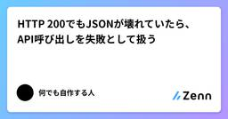
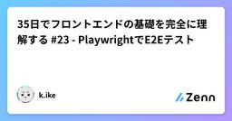
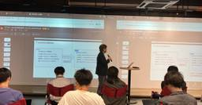
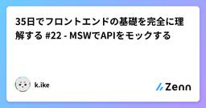

直近1週間の更新
10/31 (土)
WACATE 2026 冬は12/19,20に開催予定です！ ブログ - WACATE
まだちゃんとした告知はできていませんが、WACATE 2026 冬は12/19,20に開催予定です。 セッション内容の検討は既に始まっています。 開催申し込みページは鋭意作成中ですので、もう少しお待ちくださいませ！投稿 WACATE 2026 冬は12/19,20に開催予定です！ は WACATE に最初に表示されました。
10時間前
AIではじめるセルフQA：要求をMECEにしよう  Zennの「QA」のフィード
Zennの「QA」のフィード
サマリーAI全盛の今、QAの方だけでなく、エンジニアもQAする時代が本格的になってきました。ただ、AI は計画に書かれたとおりに実装します。計画に書かれていないことは実装しません。コードベースを読んで初めて見つかる要求の穴があります。ですので、この記事ではその穴を実装の前に見つける方法を紹介します。自分はこれを define-done という Agentスキルにしています。題材のリポジトリは https://github.com/YasuakiOmokawa/skills で公開しています。 計画どおりに実装しても壊れる例次の例はスキルの評価用に作った架空のものです。利用...
16時間前
10/30 (金)

AIの出力を「なんとなく良い」で決めないために物差しを先に作ったら、物差し自体のバグが2つ出た Zennの「Test」のフィード
自分の声で英語を喋らせたい、という機能を作ろうとしている。TOEICの学習アプリで、自分の声のまま、正しい発音のお手本を聞くという用途だ。やり方は2つある。声の量GPU3ヶ月の費用（AWS東京・実価格から計算）ゼロショット（追加学習なし）30秒数秒約6,000円ファインチューニング10分〜1時間数時間 × 試行回数約17,300円ゼロショットで足りるなら1/3で済む。 では足りているかを、どうやって判定するのか。普通はこうなる。モデルAで作った → 「お、似てる気がする」設定を変えた → 「さっきよりいいかも？」参照音声を...
1日前
ローカル Playwright テストが本番 Supabase DB に書き込む罠 Zennの「Test」のフィード
結論：この3つを確認する# 1. .env.local に本番 SERVICE_ROLE_KEY が入っていないか確認grep 'SUPABASE_SERVICE_ROLE_KEY' .env.local# 2. Playwright テストの webServer が本番 URL を参照していないか確認grep 'SUPABASE_URL' playwright.config.ts# 3. テストデータの cleanup コードがあるか確認grep 'globalTeardown\|DELETE.*TEST' tests/.env.local に本番 SERVICE...
1日前
CSVに9月の一行を足したら、10月の集計額が増えた Zennの「Test」のフィード
月ごとの売上を集計するために、Python関数を作るとします。CSVから、指定した月の支払い済み金額を合計する関数です。動作を確かめるため、10月の支払い済み売上1200と、9月の支払い済み売上900をサンプルにします。今回は10月分を集計するので、答えは1200になるはずです。最初に10月の一件だけを渡すと、結果は1200でした。ところが、9月の一件を加え、集計対象は10月のままで実行し直すと、結果は2100。9月分まで合算されてしまいました。さて、何が原因だったのでしょうか？それは、月の指定を処理に使っていなかったことです。10月の一件だけで試しても、この誤りは表に出ません。...
1日前

これ作って！できた！動いた！でもなんか不安・・・←これはなぜ？ Zennの「Test」のフィード
はじめに船長（せんちょう）と申します。最近、AIに実装を任せてソフトウェアを作ることがほとんどになりました。やりたいことを伝える。設計を壁打ちする。実装してもらう。すると、言った通りのものが出てくるんですよね。動かしてみても、ちゃんと期待通りに動く。すごい時代です。でも、なんか不安なんです。やりたいと言ったことは、たしかに実現されてる。なのに「じゃあこれでリリースしていいよね？」と言われると、自信を持って頷けない。何が不安なのか自分でもよく分からず、ここ最近ずっともがいていました。仕様書を文書じゃなくてテストにしてみたり、AIにフローチャートを描いてもらってレビューし...
1日前
IoTのセンサー値、「表示された」で終わらせず、「値の正しさ」を確かめるテストの考え方 Zennの「Test」のフィード
はじめに温度センサーの値をRaspberry Piで受け取り、データベースに保存して、ブラウザに表示する。IoTシステムを作ると、画面に値が出た時点で「動いた！」と安心してしまいがちです。でも、画面に値が表示されることと、その値が正しいことは別の話です。センサーの値は、読み取り・通信・保存・計算・表示と何段階も経由して画面に届くので、どこかで値がずれていても、画面だけ見ていては気づけません。この記事では、IoTシステムで「センサーの値が本当に正しいか」を確かめるための考え方と、具体的な方法をまとめます。 「表示される」と「正しい」は別のテストテストで確かめることは、大きく...
1日前
FakerとファクトリでテストデータをリアルにするPHPテスト術 Zennの「Test」のフィード
FakerとファクトリでテストデータをリアルにするPHPテスト術 概要PHPのテストで「テストデータをどう用意するか」は品質と保守性を大きく左右します。['name' => 'test', 'email' => 'a@a.com'] のようなベタ書きは書き始めは速いものの、カラムが増えるたびに全テストへ波及し、境界値のバグを取りこぼします。本記事では Faker で現実味のあるダミーデータを生成し、ファクトリで「意味のある1件」を再利用可能な形に組み立てる方法をハンズオンで示します。Laravelのモデルファクトリを主軸にしつつ、フレームワークに依存しない素のFa...
2日前
もうクソコードでもいいや 〜テストコードドリブンという割り切り〜 Zennの「Test」のフィード
はじめに正直に告白する。最近、僕は「もうクソコードでもいいや」と思い始めている。長年エンジニアをやってきて、責務をシンプルに分離して書けたときの気持ちよさは知っている。クラスの役割がきれいに分かれて、名前がしっくりきて、変更が一箇所で済む。あの感覚は確かに快感だ。でも、その快感の下には、もっと根っこの本音がある。「結局、動けばいいんだよな」 という本音だ。 きれいなコードの効果、本当に測れてる?きれいなコードには効果があると、ずっと信じてきた。継続開発が楽になるメンテナンスしやすいバグが減るオンボーディングが速い全部「そう言われている」。でも、それが自分のプ...
2日前
心理的安全性とガバナンスを両立させるテストチームの改善事例 品質 | Sqripts
こんにちは。QAコンサルタントのテストのひろさんです。 本記事では、テスト進捗自体は順調なものの、現場の役割にミスマッチが生じていたプロジェクトの改善事例を紹介します。当時テストPMだった私が、JSTQB AL-TM v...The post 心理的安全性とガバナンスを両立させるテストチームの改善事例 first appeared on Sqripts.
2日前

AIの「モックだらけテスト」に頼らない。実務で破綻しないVitest入門とテストケースの選び方 Zennの「Test」のフィード
はじめにフロントエンドの実務で「何をどこまでテストすべきか」と悩むことは多いでしょう。生成AIの活用でテスト作成は容易になりましたが、AI任せにするとモックだらけの形骸化したテストになりやすいという課題もあります。本記事では、Vitestの基礎やモックの適切な使い分けに加え、ISTQBの原則を基にしたテストケースの選び方、Vue3での実践的単体テストを解説します。保守性や網羅性を見直したい方に役立つ内容です。 テストの目的項目補足不具合の検出---変更による不具合の防止---仕様の明確化期待する動作が曖昧な箇所を見つけ、関係者間で認識を合...
2日前

HTTP 200でもJSONが壊れていたら、API呼び出しを失敗として扱う Zennの「Test」のフィード
APIが不正なJSONやnullを返したときに、成功した結果として扱わないための処理を紹介します。HTTPのステータスが200でも、画面で使えるデータが届いたとは限りません。JSONを読めなかった場合にnullへ置き換えるだけでは、そのnullを正常な結果として画面へ渡してしまうためです。 JSONの読み取り失敗をnullにしたあと、そのまま返していたAPI呼び出しは共通の request<T>() にまとめています。修正前は概略として、次の流れでした。const payload = await response.json().catch(() => null...
2日前
10/29 (木)

Playwright の E2E を、ページオブジェクトの route で変更から選んで回す（設計編） Zennの「QA」のフィード
!この記事は、2026年10月時点で調査・検討している段階の内容です。まだ運用は始まっておらず、ここに書いた設計が正しいかどうかも確かめきれていません。「こうすればうまくいく」という記事ではなく、検討中の考えを共有する記事として読んでいただけるとうれしいです。 はじめにこんにちは！アルダグラムでQAエンジニアをしている千葉です！アルダグラムでは、現場DXサービス「KANNA」を開発・提供しています。KANNA の E2E は Playwright で書いていて、プロダクトとは別のリポジトリで管理しています。突然ですが、E2E はいつ回すのが理想でしょうか。開発中に、変更に...
2日前

人間がコードを読まずにPRをマージする技術 ─ それでも、品質は手放さない Zennの「Test」のフィード
ある日ブラウザを開くと、私のGitHubの通知欄に未レビューのPRが20件ほどたまっていました。全部、Claude Codeが書いたPRで、私が1件を読み終えるあいだに、Claudeは次のPRを2件出してきます。ある日、私は気づいてしまいました。この勝負、人間は絶対に勝てない、、、みなさんは、AIが出してくるPRを、ちゃんと全部読めていますか？私は読めていませんでした。読んでいるふりをして、LGTMを押していただけでしただけの無能です＞＜ AIが書くコードを、人間が全部読むのはもう無理です＞＜AIが書くコードを、人間が全部読んでコードレビューするのはもう無理です。だ...
2日前
AI時代のテスト戦略を、業務システムのフロントエンドに当てはめて考える 2 Zennの「Test」のフィード
2 Zennの「Test」のフィード
はじめに普段、AIにJestでユニットテストを書かせています。テストは増え、CIも通ります。ただ、通っているテストが何を保証しているのかを、自分の言葉で説明しきれないと感じていました。そんなときに読んだのが、ababup1192さんの『AI開発時代だからこそ、テストの役割を見つめ直す』です。この記事では、元記事の要点を整理したうえで、型がほぼ number のままの業務システムのフロントエンドにどう当てはめるかを考えます。なお、後半の適用案はまだ実際のプロダクトには入れていません。導入の計画と、その判断の理由を書いています。 元記事の要点 テストの種類ごとに、検出できる...
3日前
動いたGoツールをGitHubで公開する前に、導入手順までテストした Zennの「Test」のフィード
PwnagotchiをLinux PCから操作するGo製ツール「Pwnbridge」を作った。実機確認後、GitHubへ出す準備で導入手順に問題が見つかった。今回のTOMLの並びでは、プラグインを一つ有効にすると、保存後に無関係な設定の所属先まで変わった。構文エラーにはならず、falseという値も残る。その再現と修正を中心に、公開前の試験を書く。 このシリーズGoとD-BusでPwnagotchiのコンパニオンを作るUSBとBluetooth PANを切り替える導入手順までテストしてGitHubで公開する（この記事）!下書きへのリンクは各記事の公開後に有効になる。コー...
3日前

Claude Codeで「QAチーム」を組んだら、効いたのは「捨てる仕組み」だった ― AIだけが見つけた不具合・見逃しは？ Zennの「Test」のフィード
SREホールディングス株式会社でプロジェクトマネージャ（PM）をしている鍋谷です。「AIにテストを手伝わせたい。でも、AIの『できました』はどこまで信用していいのか分からない」そんなモヤモヤ、あなたのチームにもありませんか？本記事では、Claude Code で「AIのQAチーム」を組み、社内の業務SaaSで1か月、手動の機能テストを回してみた結果として、AIだけが見つけた不具合、AIが見逃した不具合、そしてAIが自信満々に出してきた誤指摘をどう捨てたかを紹介します。 結論Claude Code のスキルとサブエージェントで「リーダー1・テスター複数・懐疑的な検証者」のQA...
3日前
Claude Codeで「QAチーム」を組んだら、効いたのは「捨てる仕組み」だった ― AIだけが見つけた不具合・見逃しは？ Zennの「QA」のフィード
SREホールディングス株式会社でプロジェクトマネージャ（PM）をしている鍋谷です。「AIにテストを手伝わせたい。でも、AIの『できました』はどこまで信用していいのか分からない」そんなモヤモヤ、あなたのチームにもありませんか？本記事では、Claude Code で「AIのQAチーム」を組み、社内の業務SaaSで1か月、手動の機能テストを回してみた結果として、AIだけが見つけた不具合、AIが見逃した不具合、そしてAIが自信満々に出してきた誤指摘をどう捨てたかを紹介します。 結論Claude Code のスキルとサブエージェントで「リーダー1・テスター複数・懐疑的な検証者」のQA...
3日前
JSTQB（ソフトウェアテスト技術者資格認定組織）、Specialist シラバス 生成 AI を使用したテスト（CT-GenAI）Version 1.0 J01を公開 1 特定非営利活動法人ソフトウェアテスト技術振興協会【プレスリリース】 by PR TIMES
[特定非営利活動法人ソフトウェアテスト技術振興協会]JSTQB（ソフトウェアテスト技術者資格認定組織）は、2026 年 10 月 28 日（水）に Specialist シラバス 日本語版 生成AIを使用したテスト（CT-GenAI）Version 1.0 J01 を公開しました。本シラバスは、大規模言...
3日前
テストコードはなぜ、そしてどう書くべきか？ Zennの「Test」のフィード
!この記事は2023年4月11日に執筆されたものです。こんにちは。Inflabのバックエンド開発者、Haruです。良いソフトウェア設計、良いコードのためにテストコードを書くべきだという記事は、きっとたくさん目にしてきたと思います。しかし、テストコードを書く意義に納得できない開発者もいれば、いざテストを書いても効果を実感できないケースもあります。Inflearnに入る前の私も、そうした開発者の一人でした。Inflearnに来て印象に残ったことの一つが、テストコードの存在でした。今になって思うのは 「自分はこれまで、テストコードを書くべき理由も、うまく書く方法も知らなかったんだ...
3日前
【第1回】”テスト会社”の内外で言われていること 品質 | Sqripts
今回から新連載「テスト会社に勤めるって実際どうなの？～事業会社QA・ツールベンダー”も”経験して見えたこと～」をスタートします。 私はこれまで、いわゆる「テスト会社」と「事業会社」、そして現在の「...The post 【第1回】”テスト会社”の内外で言われていること first appeared on Sqripts.
3日前

35日でフロントエンドの基礎を完全に理解する #23 - PlaywrightでE2Eテスト Zennの「Test」のフィード
この記事で学ぶこと#20 で関数、#21 と #22 でコンポーネントと、テストを下から積み上げてきました。今回はその一番上の層、E2E テスト（End to End。端から端まで）です。本物のブラウザを起動し、本物のアプリを動かして、「ユーザーが一連の操作をやり遂げられるか」を丸ごと確かめます。道具は Playwright を使います。E2E テストが下の2層と何を分担しているかを、テストピラミッドで説明できるPlaywright で「ページを開く、操作する、確かめる」のテストを書いて動かせるE2E を少数に絞る理由と、何を E2E にすべきかの判断基準を説明できる迷...
3日前
10/28 (水)
Qt 6.12への移行確認：コンパイル成功の先にある3つのテスト Zennの「Test」のフィード
Qt 6への移行でコンパイルが通っても、選択変更の通知やQMLの初期化、配布先での起動が正しく成立するとは限りません。APIを修正した理由と、修正後に確認する動作を組にすると、移行の完了条件が具体的になります。この記事はSRAの技術記事「Qt 6.12 への移行実践 — ビルド、API 修正、QML、配布の確認」を参考に、選択通知・初期値・配布の確認へ絞って整理したものです。公式資料は2026年10月26日に確認しています。元記事の実行結果と、この記事で提案する製品向けの追加確認を区別します。今回、コードの再実行や配布試験は行っていません。 Qt 5からの変更と、Qt 6.12固有...
3日前
MediaStoreのdate_addedはadb content updateで変わらない ― 端末の時計を動かして仕込む Zennの「Test」のフィード
こんな症状で検索して辿り着いた方向けのまとめAndroidエミュレータの MediaStore に、date_added（追加日）が今日・昨日・数日前・数か月前と散らばった曲を用意したいadb shell content update で date_added を書き換えたが、エラーなしで終わるのに、content query で読み直すと元の値のままadb root が adbd cannot run as root in production builds で使えず、external.db を直接書き換えられないadb push したファイルの更新日時は date...
3日前
RoleFUZZER: User-Behaviour Fuzzing for Role-Specification Adherence in Large Language Models arXiv Query: search_query=all:"software testing"&id_list=&start=0&max_results=10
Large language models (LLMs) are often conditioned into specific roles such as tutors, interviewers, or agents acting for an organisation, through system prompts that specify how they should behave. The extent to which they can actually adhere to these role specifications under multi-turn interactions with realistic and potentially problematic users is understudied. To address this, we propose user behaviour fuzzing, a guided search over plausible user behaviours that can lead a model to violate
3日前

【JaSST'26 Niigata セッションレポート】AI時代にQAの役割はどう変わる？テスト実行者から「品質アーキテクト」への進化  PTW／ポールトゥウィン【公式】
PTW／ポールトゥウィン【公式】
生成AIの進化によって、ソフトウェアテストや品質保証（QA）の現場にも大きな変化が訪れています。テストケースの作成やテスト実行の自動化が進む中、これからのQAにはどのような役割が求められるのでしょうか。2026年9月18日に開催されたソフトウェアテストシンポジウム「JaSST'26 Niigata（Japan Symposium on Software Testing Niigata 2026）」において、ポールトゥウィン QAソリューション事業部の沢崎 育久が、「AI時代のQA Re-Engineering ～テスト担当から品質アーキテクトへ～」と題した講演を行いました。続きをみる
4日前
既存プロセスを壊さずに、AI駆動開発を成立させる（Agile in Motion vol.7） SHIFT EVOLVE グループの新着イベント
開催日時: 2026/12/02 19:00 ～ 20:30<br />開催場所: 港区麻布台1-3-1(麻布台ヒルズ森JPタワー)<br /><br /><h2>既存プロセスを壊さずに、AI駆動開発を成立させる（Agile in Motion vol.7）</h2><p>アジャイルではどうやって品質を担保したらいいのか？品質にこだわってきたSHIFTならではの目線で、アジャイルの神髄に迫る Agile in Motionシリーズ。</p><p>今回は、東北電力株式会社 DX推進部より金澤綾美氏をお迎えし、石橋を叩きながら渡る大企業での「AI駆動開発×アジャイル」の事例をご紹介します。既存の開発ルールや承認ゲートを変えず、稼働中の規制産業システムにAI駆動開発とアジャイルをどう成立させたのか、その具体的な工程を深掘りします。受入条件の二層化（人が価値を決めAIが網羅性を埋める）や、13の標準ステップ（チケット進め方の固定）、三層テスト（VRT・E2E・Unit）の設計と効果の測り方、さらには...
4日前

不具合の知見を、次のレビューへ —— レビュー観点を蓄積・活用する3層構造の運用 1
QA - SmartHR Tech Blog
はじめに こんにちは。SmartHRでQAエンジニアをしているnotchです。 私が担当しているプロダクトでは定期的に不具合を振り返っていたのですが、得られた知見を次の仕様やテストケースのレビューに十分生かせていませんでした。 今回は、その知見をレビュー観点として整理し、3層に分けて蓄積・活用する仕組みと運用を紹介しようと思います。 解決したい課題 不具合の振り返りで得た知見をレビューで生かすには、個々の事象を「何を確認すべきか」という観点に整理し、必要な場面で参照できるようにする必要がありました。 しかし、そのための継続的な運用が定まっておらず、せっかく不具合から得た知見を十分に反映できてい…
4日前
【第2回】AI時代に、「場」を通してつながる②～収支を数えるのをやめたとき、場が見えてきた～│専門家2人による往復書簡 品質 | Sqripts
山下さんへ 山下さん、第1回の書簡をありがとうございます。同じ「ゆうすけ」として（それではない、と釘を刺されましたが）、バトンを受け取りました。 読み進めるうちに、この一文で手が止まりました。「かつて、私はその居心地の悪...The post 【第2回】AI時代に、「場」を通してつながる②～収支を数えるのをやめたとき、場が見えてきた～│専門家2人による往復書簡 first appeared on Sqripts.
4日前
4時間足の「区切り」を1時間ずらしたら、検証の利益が半分以下になった Zennの「Test」のフィード
暗号資産の自動売買Botを作っています。いくつかの戦略を組み合わせていて、今は口座2万円ほどの少額で動かしながら、検証と本番の動きが一致しているかを毎週確かめています。その中の1つに、4時間足を使う逆張りの戦略があります。直近24時間(4時間足6本)で10%以上下げた銘柄を買う最大4日(96時間)持って売るこの戦略の本番の記録を見ていて、「4時間足」の区切りの時刻が、検証と本番で1時間ずれていることに気づきました。直すべきかを調べるつもりが、行き着いた結論は「直す必要はない。ただ、検証の数字のほうが当たりを引いていた」でした。 1. 最初の違和感: 96時間のはずが、全...
4日前

35日でフロントエンドの基礎を完全に理解する #22 - MSWでAPIをモックする Zennの「Test」のフィード
この記事で学ぶこと#21 の最後に宿題を残しました。検索フォームが本物の API に検索を投げる部品だったら、テスト中の通信はどうするのか。テストは Node.js の中で動くので、そこにサーバーはいません。かといって本物のサーバーにつなぐと、今度はテストが別の理由で壊れ始めます。今回はこの問題を MSW（Mock Service Worker）という道具で解決します。通信の相手だけを偽物に差し替えて、アプリのコードは1行も変えずにテストする仕組みです。テストから本物の API を呼ぶと何が困るのかを、実際に落として説明できるMSW のハンドラを書いて、通信するコンポーネント...
4日前
10/27 (火)
QAエンジニアは「テストをする人」ではなかった ― 『QAエンジニア入門』から学ぶ品質への向き合い方 Zennの「Test」のフィード
今回読んだ本『QAエンジニア入門 チームで品質を高める連携のしかた』岩崎駿 著https://gihyo.jp/book/2026/978-4-297-15832-3 なぜこの本を手に取った？AIを用いた開発が当たり前になり、品質を保証することを考える時間が多くなった結果、品質保証への興味を持つようになりました。そのため、それに関する本や記事を読んでいたところ、QAエンジニアという存在を知りました。開発はせず、テストの実施を主に行う専門的なエンジニアなのかな？と気になったためです。 テストの実施は彼らの活動の一部にすぎないQAエンジニアにとって、テストの実施は彼らの活...
4日前
【初稿・第4回補足】実機を増やした後の検証と記録を自動化する――Android用PDFビューアの開発記録 ソフトウェアテストタグが付けられた新着記事 - Qiita
連載ストックリスト：Android版「見開きPDFビューア」開発記録この記事は、ChatGPTとの壁打ちと、Android Studioに保存されたGeminiの会話履歴、Gitの変更履歴・ソースコード、手元に保存された実行ログの調査をもとに作成しました。初稿につ...
5日前
10/26 (月)
AI時代におけるQuality Engineeringの教科書 Zennの「QA」のフィード
ITサービス・ソフトウェア開発・プロダクト開発におけるQuality Engineeringを扱う本です。QEの定義から始め、AIによる開発の変化を研究結果とともに整理したうえで、考え方やスキル、具体的な実践を説明します。動画配信サービス「ハイシーン」を例に、要件、テスト設計、生成コードのレビュー、AI評価、リリース、本番運用を学びます。実装が速くなる一方で検証やレビューが追いつかなくなる場面を取り上げ、シフトレフトやコンテキストの集約などの対策も考えます。全16章。実務用の書式を収録しています。
6日前
Claude Code ＋ MagicPod の MCP で、テストの調査から修正まで AI にお願いしている話 Zennの「QA」のフィード
はじめにMagicPod の導入には、今の会社を含めて 2 社で関わってきました。すっかり愛着のあるツールです。最近、MagicPod と AI を組み合わせた記事を見かけることが増えてきて、うれしく思っています。MCP サーバーを通して AI がテスト結果を読み取り、毎朝の確認を楽にしている事例も出てきています。Claude などの AI を仕事で使うのが当たり前になってきました。弊社でやっている Claude Code ＋ MagicPod の使い方も紹介して、MagicPod がもっと広まるきっかけになればと思い、この記事を書きました。いまは、夜間に流れる E2E テス...
6日前
仕事がきっかけでバイクの免許をとったら「わかり方」がわかった TestonoBlog
こんにちは、とのの（@tonono2587）です。 発表したので資料を公開します！ はっぴょう会で発表してきたよ ソフトウェアテストに関わる人のはっぴょうかい #テストラジオ で発表してきました！ connpass.com youtu.be 当日のスライド 自分が体験できないようなサービスの担当になったとき、みなさんならどうしますか？ 宇宙船のシステムの担当とかなったらどうしよう？ 仕事がきっかけでバイクの免許をとったら「わかり方」がわかった by @Tonono2587 わかり方だけじゃなくて、「運転」が好きかもしれないということもわかってきました 乗り物のほうかな？ 教習もその後の…
6日前
10/25 (日)
JSTQB AL-TA 不合格体験記(インプットのための周回への飽き対策を考える) Zennの「QA」のフィード
2026年10月12日（スポーツの日）に、JSTQB Advanced Level テストアナリスト（AL-TA）を受験し、不合格でした。この記事はその不合格体験記です。合格体験記はたくさん書かれていますが、不合格体験記はあまり書かれません。うまくいかなかった勉強法こそ、これから受験する方の参考になると思い、書いてみることにしました。先に結論を書くと、同じ教材を同じ読み方で何周もしたことによる飽きが不合格につながったと考えています。飽きによって集中力が落ち、苦手分野の理解が浅いまま本番を迎えてしまいました。また、2026年11月中旬からは新シラバス（Ver.4.0.J01）に...
7日前